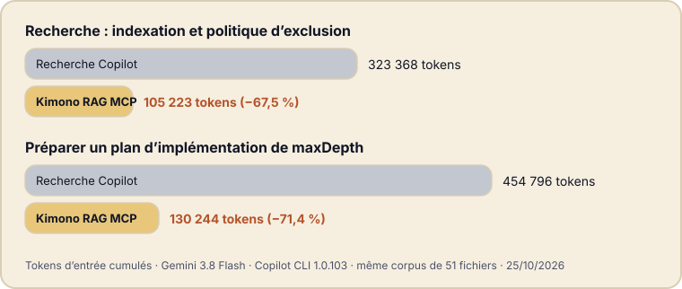

Vous demandez à un assistant de préparer une modification dans un projet qu’il ne connaît pas. Pour le comprendre, il ouvre un fichier après l’autre, et chaque fichier ouvert est facturé à nouveau à chaque étape de la conversation. La plus grande partie de ce qu’il lit se révèle inutile.
L’idée en une image
Kimono indexe un projet sur votre machine et donne aux assistants compatibles MCP une recherche lexicale et sémantique. Le choix clé porte sur ce qui revient : des chemins de fichiers et des plages de lignes, pas du code source. L’assistant ne lit ensuite que les plages qu’il a retenues. Kimono fonctionne avec ou sans base AI-KIDO, et l’indexation comme les embeddings s’exécutent en local.

Ce que l’on fait dans VS Code
Vous installez l’extension depuis le Marketplace, ouvrez votre projet, lancez MCP: List Servers et démarrez Kimono. Dans le chat de votre assistant, vous activez ses outils, puis vous posez votre question comme d’habitude :
Où est géré le endpoint ping dans ce projet ?L’assistant ne parcourt pas les fichiers un à un. Il répond en citant trois endroits : src/api/ping.ts (ligne 1), src/index.ts (ligne 1) et docs/architecture.md (ligne 2). Il ouvre ensuite uniquement ces lignes pour vous expliquer le code. Rien d’autre n’a été lu, donc rien d’autre n’a été facturé.
Sous le capot
Pour trouver ces trois endroits, l’assistant a ouvert un snapshot figé de votre projet, puis lancé une recherche. Voici la réponse que Kimono lui a renvoyée :
{"results":[
{"path":"src/api/ping.ts","ranges":[[1,1]]},
{"path":"src/index.ts","ranges":[[1,1]]},
{"path":"docs/architecture.md","ranges":[[2,2]]}
],"snapshotId":"cff9f88c-…"}La lecture est une étape distincte, qui ne renvoie que les lignes choisies, puis le snapshot est libéré. La recherche est compacte par défaut, et plusieurs requêtes indépendantes peuvent être regroupées dans un seul appel.
Ce que nous avons mesuré
Le rapport de benchmark public compare la recherche standard de Copilot (grep, glob, view) à Kimono RAG sur deux tâches de dépôt, avec Gemini 3.8 Flash dans Copilot CLI 1.0.103 et le même corpus de 51 fichiers.

- −67,5 %tokens d’entrée, recherche sur l’indexation et l’exclusion
- −71,4 %tokens d’entrée, plan d’implémentation de maxDepth
- −28,9 %durée, tâche de recherche (111,2 s à 79,1 s)
- −52,0 %durée, tâche de planification (175,2 s à 84,0 s)
Dans les deux sessions Kimono, les 8 requêtes de recherche ont été regroupées en 2 appels de recherche, suivis de 4 lectures de plages, soit 8 appels d’outils Kimono au total.
À essayer
- Installez Kimono RAG MCP depuis le Visual Studio Marketplace (VS Code 1.106 ou plus récent, avec un client de chat compatible MCP).
- Ouvrez et approuvez le dossier de votre projet, lancez MCP: List Servers, démarrez Kimono et activez ses outils dans votre client de chat.
- Comparez sur votre propre tâche. Les détails sont sur la page Kimono.